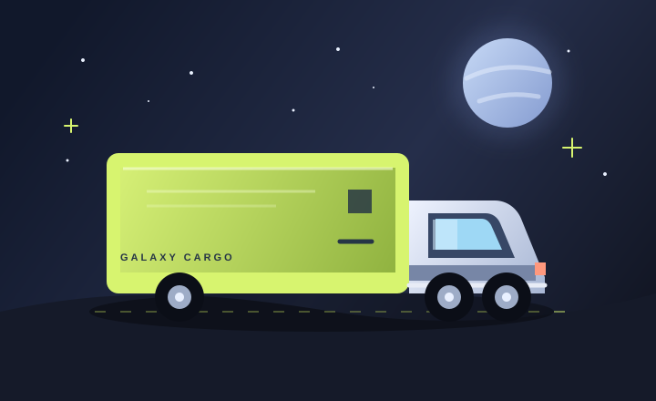
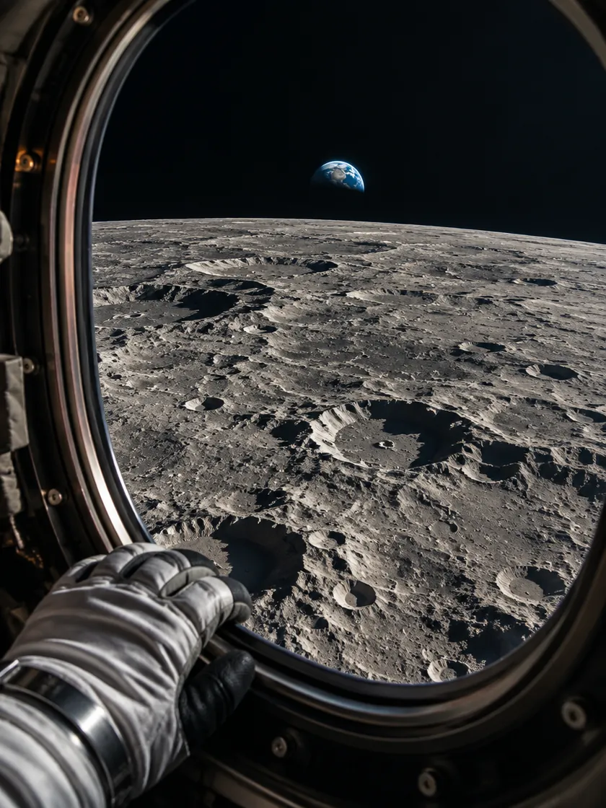
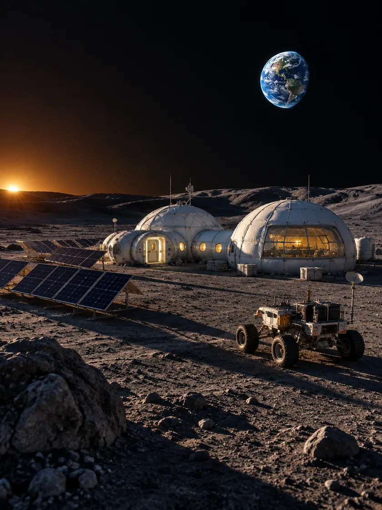
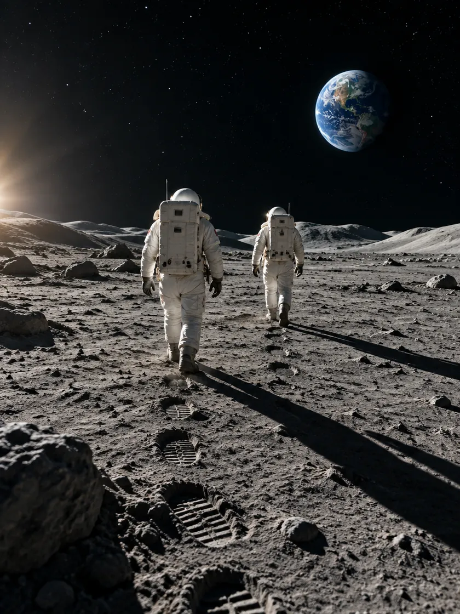

01 / СТАРТ
Задайте курс
Опишите идею, выберите направление и найдите специалиста под свою задачу.
Все направления ↗Найдите специалиста, который поможет пройти путь от первого замысла до уверенного запуска.
Выбрать направление ↗Для каждой миссии — свой способ доставки.

Для крупных грузов и дальних маршрутов между планетами. Спокойно доставит ваш груз через звёздные системы.
Для срочных посылок и особо важных грузов. Выбирайте ракету, когда нужно отправиться за пределы галактики.
Путь проекта становится короче, когда рядом нужные специалисты.
Опишите идею, выберите направление и найдите специалиста под свою задачу.
Все направления ↗
Дизайнеры, разработчики и авторы присоединяются к проекту на нужном этапе.
Найти дизайнера ↗
Создайте айдентику, сайт и контент, на которых будет держаться запуск.
Смотреть услуги ↗
Запустите проект с командой, которая знает, куда двигаться дальше.
Продвижение ↗